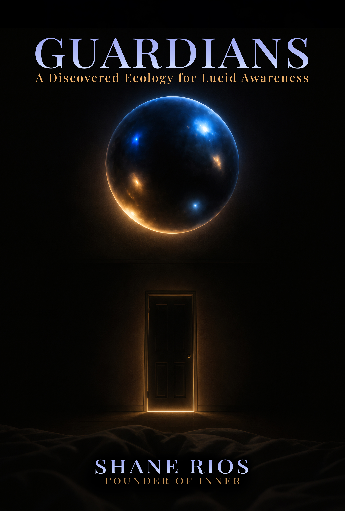

Inner Research Foundation
A Discovered Ecology for Lucid Awareness
Five presences. One living system. A complete framework for conscious dreaming — synthesized from fifty years of research and practice, built to deepen automatically with every session you put into it.
About the Book
Most approaches to lucid dreaming are about memory. You remember to check. You remember your intention. You remember that you're dreaming. The techniques are well-designed — but they share a structural vulnerability: the faculty they depend on is precisely the faculty that sleep dismantles. Memory degrades at the threshold. Effort dissolves.
The Guardian Ecology begins from a different premise. Rather than training the mind to remember, it trains felt awareness to recognize. Rather than installing intentions that must survive the crossing intact, it cultivates presences that operate independently of memory — somatic qualities of awareness that are already oriented to the threshold when the threshold arrives.
The five Guardians are not techniques in the conventional sense. They are cultivated aspects of your own awareness, each trained to a specific moment and a specific function in the inner journey. Together, when genuinely established, they form something more than a collection of tools: a living ecology that adapts to whatever territory you encounter, deepens automatically with each session, and eventually becomes less a practice you do than a ground you inhabit.
This manuscript draws from Stephen LaBerge's landmark laboratory research, Robert Monroe's phenomenological cartography of threshold consciousness, over a thousand years of Tibetan dream yoga practice, and contemporary neuroscience of metacognitive awareness, interoception, and sleep-dependent memory consolidation. What each tradition arrived at, independently, was a version of the same observation. This book formalizes that convergence into a learnable developmental sequence.
The Guardian Ecology
Each Guardian is a cultivated aspect of your own awareness, trained to a specific moment and function in the inner journey. They must be developed in sequence — what fails when practitioners attempt to bypass stages is well-documented in the text.
Guardian I
The metacognitive faculty that recognizes the dreaming state from within it. Not a remembered cue — a trained quality of awareness that signals its own presence. The foundation everything else depends on.
Guardian II
Once recognition occurs, the dream state must be held without destabilizing it. Stability is the somatic quality that maintains lucid presence — grounded, unrushed, continuous across the natural turbulence of dreaming.
Guardian III
The capacity to move from surface lucidity into deeper territory. Depth allows intentional descent — past the dream surface into states associated with insight, encounter, and the less-charted regions of inner experience.
Guardian IV
A cultivated quality of presence that navigates difficult, destabilizing, or confrontational dream content with equanimity. The ecology's safeguard — allowing the practitioner to go deeper without being undone by what they find there.
Guardian V
The ecology's most novel element. The Retroactive Guardian operates across time rather than within a single session — a field of accumulated practice that persists, deepens, and develops its own intelligence between sessions. The ground the other four come to inhabit.
Inside the App
The book describes the ecology. Inner is where it becomes a progressive audio practice.
Cultivation
The primary 20–30 minute pre-sleep track is voice-led through Location, Dissolution, and Orientation.
Calibration
A shorter 5–10 minute waking practice reinforces the Guardian between full sessions.
Field
A minimal carrier track designed to play during sleep. It does not guide; the planted Guardian operates independently.
The audio ends before sleep. What crosses the threshold is what the practice established. A Collective track spanning all five Guardians completes the full sequence.
Who This Is For
This manuscript is written for practitioners who have already encountered the Guardian Ecology through Inner's practice sessions and want to understand, at a deeper level, what they are working with and why the system is structured the way it is.
You don't need this to work effectively with the Guardians. The practice is complete without the theory. But some practitioners find that understanding deepens engagement — that knowing why the sequence is non-negotiable helps them resist the temptation to compress it, that recognizing the neuroscience behind somatic presence helps them trust what they feel rather than second-guess it, that seeing how multiple independent traditions arrived at the same territory helps them inhabit that territory with more confidence.
If that describes you, this is the book.